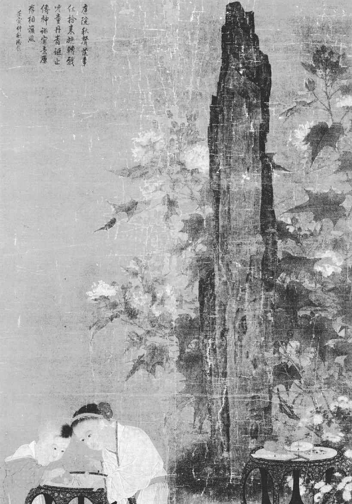
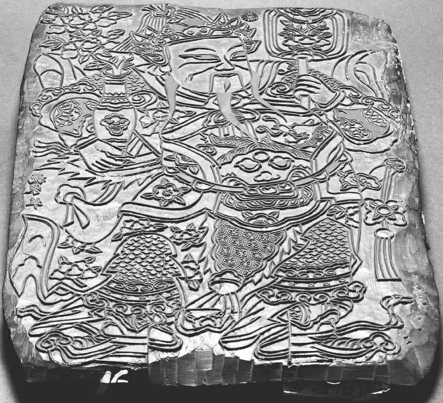
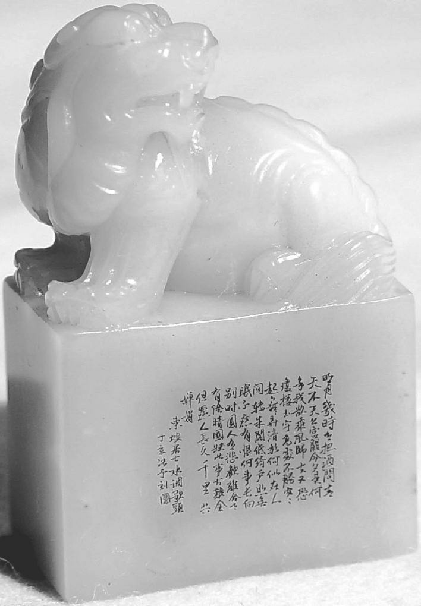
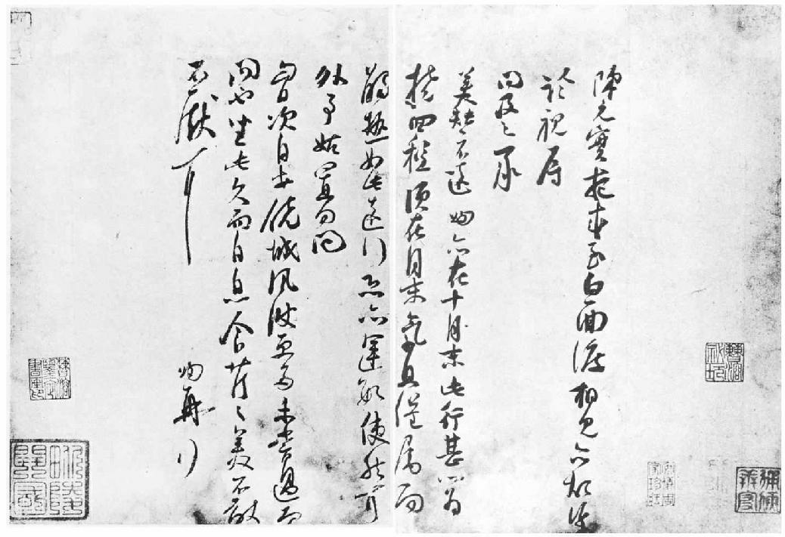

第三章 童年与青年
苏东坡八岁到十岁之间，他父亲进京赶考。落第之后，到江淮一带游历，母亲在家管教孩子。这段期间内，家中发生一件事，《宋史·苏轼传》与苏辙为他哥哥写的长篇墓志铭里都有记载。母亲那时正教孩子《后汉书》。书上记载后汉时朝政不修，政权落入阉宦之手，书生儒士反抗不阴不阳的小人统治。贪婪、纳贿、勒索、滥捕无辜，是经常有的。因为地方官都是那些太监豢养的走狗小人，忠贞廉正之士和太学生竟不惜冒生命之险上书弹劾奸党。改革与抗议之声此起彼落，调查与审讯之事层出不穷。当时学者与太学生辈在朝廷圣旨颁布之下，或遭皮肉之苦，或遭迫害折磨，或遭谋杀丧命。
在这群正人学者之中，有一个勇敢无畏的青年，名叫范滂，而苏洵的妻子教儿子读的正是《范滂传》：
建宁二年，遂大诛党人，诏下急捕滂等。督邮吴导至县，抱诏书，闭传舍，伏床而泣。滂闻之，曰：“必为我也。”即自诣狱。县令郭揖大惊，出解印绶，引与俱亡，曰：“天下大矣，子何为在此？”滂曰：“滂死则祸塞，何敢以罪累君，又令老母流离乎！”其母就与之诀。滂白母曰：“仲博孝敬，足以供养，滂从龙舒君归黄泉，存亡各得其所。唯大人割不可忍之恩，勿增感戚！”母曰：“汝今得与李、杜齐名，死亦何恨！既有令名，复求寿考，可兼得乎？”滂跪受教，再拜而辞。顾谓其子曰：“吾欲使汝为恶，则恶不可为；使汝为善，则我不为恶。”行路闻之，莫不流涕。时年三十三。
小东坡抬头望了望母亲，问道：“妈，我长大之后若做范滂这样的人，您愿不愿意？”母亲回答道：“你若能做范滂，难道我不能做范滂的母亲吗？”
东坡六岁入学。这个私塾不算小，有学童一百多人，只有一个老师，是个道士。苏东坡那副绝顶聪明的幼小头脑很快就显露出来，在那么多的学童之中，苏东坡和另外一个学生是最受老师夸奖的。那个学生是陈太初，后来也考中科举，但是出家做了道士，一心想求道成仙去了。陈太初在晚年时一直准备白昼飞升。一天，他去拜访一个朋友，朋友给他食物、金钱。他出门之后，把那食物、金钱全散与穷人，自己在门外盘膝打坐，在不食人间烟火之下，就准备脱离此红尘扰攘的人间世。几天之后，他呼吸了最后一口气就不动弹。那位朋友叫仆人把他的尸体移走。但是当时正是新年元旦，在一年如此吉祥的日子，仆人们不愿去搬运尸体。但是死人说了话：“没关系，我可以自己搬运。”他立起身来，自己走到野外，在一个更为舒适的地方死去。这就是一般所谓道家修炼之士的“白昼飞升”。幼年时，苏东坡在读书之外，富有多方面的兴趣。放学之后，他就回家往鸟巢里窥探。他母亲已经严格告诫东坡与家中的侍女不得捕捉鸟雀。因此之故，数年之后，鸟雀知道在庭园里不会受害，有的就在庭园的树枝上做巢，低得孩子们都可以望得见。有一只羽毛极其美丽鲜艳的小鸟一连数日到他家的庭园去，苏东坡对这只小鸟记得特别清楚。
《秋庭婴戏图》（引自《图说中国通史·黄河饮马》第79页）
中国画 苏汉臣 宋 中国台北故宫博物院藏
苏汉臣，南北宋之交时的画师，擅长婴孩画。他的婴戏图画风被认为是“着色鲜润、体度如生”。《秋庭戏婴图》以细腻的笔法，描绘两个锦衣孩童在庭园玩着一种推枣磨的游戏。庭园中，一柱擎天的太湖石旁，芙蓉与雏菊摇曳生姿，点出秋日庭园景致，树石、器物皆刻画入微。这种细腻写实风格及注重细节的描写，都是宋代写实风格的代表。
有时，有官员经过眉山镇，会到苏家拜访，因为东坡的叔叔已经做了官。家里于是忙乱一阵，侍女就光着脚各处跑，到菜园去摘菜、宰鸡，好治筵席待客。这种情形在孩子眼里留下了很深的印象。
东坡和表兄妹常在一起玩耍。他和弟弟辙也常到村中去赶集，或是在菜园中掘土。一天，孩子们掘出来一块儿美丽的石板，既晶莹光泽，又有精美的绿色条纹。他们敲击之下，发出清脆金属之声。他们想用作砚台，非常合用。砚台必须用一种有气孔的特别石头，要善于吸收潮湿，并且善于保存潮湿。这种好砚台对书法艺术十分重要。一方上品砚台往往为文人视为至宝。好砚台是文人书桌子上的重要物品，因为文人一天大半的生活都与之有密切关系。父亲给孩子一个方砚台，他要保存到一直长大成人，他还要在砚台上刻上特别的词句，祝将来文名大噪。
据有些文字记载，苏东坡十岁时已经能写出出奇的诗句。在他那篇《黠鼠赋》里，我们找到了两句。这篇短文字是描写一只狡猾的小老鼠，掉入一个口袋里，假装已死，等把口袋倒在地上，便急速逃去，这样把人欺骗过。大约也正在此时，他的老师正读一篇长诗，诗里描写当时朝廷上一群著名的学者。苏东坡这个幼小的学童在老师肩膀后面往前窥探了一下，就开始问道与他们有关的问题。他们都是中国历史上的名人。因为在苏东坡的童年，中国是在宋朝最贤明的君主统治之下，他极力奖励文学艺术。国内太平无事，中国北方与西北的游牧民族，如金、辽、西夏，这些部落蛮族本来常为患中国，这时也与宋朝相安无事。在这样的朝廷之下，贤良之臣在位，若干文才杰出的人士都受到恩宠，侍奉皇帝，点缀升平。正是在这个时候，幼童苏东坡首次听到欧阳修、范仲淹等人的大名，当下深受鼓舞。幸好在这位大诗人的童年生活里，我们还有这些对他将来崭露头角的预示。虽然苏东坡记载了不少他成年时代做的梦和梦中未完成的诗句，可是还没有什么无心流露的话，供现代的传记作家使之与解释、直觉、狂想相结合，而捏造出东坡这位诗人下意识中神经病的结构形态。苏东坡倒丝毫没提到尿布和便秘等事呢。
苏东坡十一岁时，进入中等学校，认真准备科举考试。为应付考试，学生必须读经史诗文，经典古籍必须熟读至能背诵。在班上背诵时，学生必须背向老师而立，以免偷看敞开在老师桌子上的文章。肯发奋努力的学生则把历史书上的文字整篇背过。背书时不仅仅注重文章的内容、知识，连文字措辞也不可忽略，因为做文章用的词汇就是从此学来的。用著名的词语与典故而不明言其来源出处，饱学之士读来，便有高雅不凡之乐。这是一种癖好相投者的共用语言。读者对作者之能写此等文章，心怀敬佩，自己读之而能了解，亦因此沾沾自喜。作者与读者所获得的快乐是由观念的暗示与观念的联想而来，此种暗示比明白直说更为有力、动人，因为一语道破，暗示的魅力便渺不可得矣。
这种背诵记忆实在是艰难而费力的苦事。传统的老方法则是要学生背一整本书，书未加标点，要学生予以标点，用以测验学生是否彻底了解。最努力苦读的学生竟会将经书和正史抄写一遍。苏东坡读书时也是用这种方法。若对中国诗文朴质的经典，以及正史中常见的名称事故暗喻等典故，稍加思索，这种读书方法自有其优点。因为将一本书逐字抄写之后，对那本书所知的深刻绝非仅仅阅读多次所能比。这样的用功方法对苏东坡的将来大有好处，因为每当他向皇帝进谏或替皇帝草拟圣旨之际，在引用历史往例之时，他绝不会茫无头绪，就如同现代律师之引用判例一般。再者，在抄书之时，他正好可以练习书法。在印刷术发明之前，此种抄写工作自不可免，但是在苏东坡时，书籍的印刷早已约有百年之久。胶泥活字印刷术是由一个普通商人毕昇所发明的。方法是把一种特别的胶泥做成单个的字，字刻好之后，胶泥变硬；然后把这些字摆在涂有一层松脂的金属盘子上。字版按行排好之后，将松脂加热，用一片平正的金属板压在那些排好的字版上，使各字面完全平正。印书完毕之后，再将松脂加热，各字版便从金属盘上很容易脱落下来，予以清洗，下次再用。
福禄寿禧年画木雕版
雕版 清代 中国印刷博物馆藏
在活字印刷出现以前，雕版是最先进的印刷方式。世界上最早的雕版印刷术在唐朝诞生。雕版印刷需要先在纸上按所需规格书写文字或图画，反贴在刨光的木板上，刻出阳文反体字做成雕版。接着在版上涂墨，铺纸，用棕刷刷印，然后将纸揭起，就成为印品。
苏东坡与弟弟苏辙正在熟读大量的文学经典之时，他父亲赶考铩羽而归。当时的科举考试有其固定的规矩形式。就像现代的哲学博士论文一样，当年那种考试要符合某些标准，须下过某等的苦功夫，要有记住事实的好记忆力，当然还要有一般正常的智力。智力与创造力过高时，对考中反是障碍，并非有利。好多有才气的作家，像词人秦少游，竟而一直考不中。苏洵的失败，其弱点十之八九在作诗上。诗的考试须有相当的艺术的雅趣，措辞相当地精巧工稳，而苏洵则主要重视思想观念。因为读书人除去教书之外，仕途是唯一的荣耀成功之路，父亲名落孙山而归，必然是懊恼颓丧的。
晚辈高声朗读经典，老辈倚床而听，抑扬顿挫、清脆悦耳的声音，老辈认为是人生的一大乐事。这样，父亲可以校正儿子读音的错误，因初学者读经典，自然有好多困难。就好像欧阳修和后来苏东坡都那样倚床听儿子读书，现在苏洵也同样倚床听他两个儿子的悦耳读书声，他的两眼注视着天花板，其心情大概正如一个猎人射了最后一箭而未能将鹿射中，仿佛搭上新箭，令儿子再射一样。孩子的目光和朗朗之声使父亲相信他们猎取功名必然成功，父亲因而恢复了希望，受伤的荣誉心便不药而愈。这时两个青年的儿子在熟记经史和优秀的书法上，恐怕已经胜过乃父，而雏凤清于老凤声了。后来，苏东坡的一个学生曾经说，苏洵天赋较高，但是为人子的苏东坡在学术思想上却比他父亲更渊博。苏洵对功名并未完全死心，自己虽未能考中，若因此对儿子高中还不能坚信不疑，那他才是天下一大痴呆呢。说这话并非对做父亲的有何不敬，因为他以纯粹而雅正的文体教儿子，教儿子深研史书为政之法，乃至国家盛衰隆替之道，我们并非不知。
对苏东坡万幸的是，他父亲一向坚持文章的淳朴风格，力戒当时流行的华美靡丽的习气，因为后来年轻的苏东坡进京赶考之时，礼部尚书兼礼部主试欧阳修决心发动一场改革文风运动，便借着那个机会，把只耽溺于雕琢文句、卖弄辞藻的华美靡丽之文的学子全不录取。所谓华美靡丽的风格，可以说就是堆砌艰深难解之辞藻与晦涩罕见的典故，以求文章之美。在此等文章里，很难找到一两行朴质自然的句子。最忌讳指物直称其名，最怕句子朴质无华。苏东坡称这种炫耀浮华的文章里构句用字各自为政，置全篇效果于不顾，如演戏开场日，项臂各挂华丽珠宝的老妪一样。
这个家庭的气氛正适于富有文学天才的青年的发育。各种图书插列满架。祖父现在与以前大不相同了，因为次子已官居造务监裁，为父者也蒙恩获封为大理评事。此等官爵完全是荣誉性的，主要好处是使别的官员便于称呼。有时似乎是，求得这么一个官衔刻在墓志铭上，这一生才不白过——等于说一个人若不生而为士绅，至少盼望死得像个士绅。若不幸赶巧死得太早，还没来得及获得此一荣耀，死后还有一种方便办法，可以获得身后赠予的头衔。其实在宋朝，甚至朝廷正式官员，其职衔与真正职务也无多大关系。读者看苏家的墓志铭，很容易误以为苏东坡的祖父曾任大理评事，甚至做过太子太傅，而且误以为他父亲也做过太子太师——其实这些荣耀头衔都是苏辙做门下侍郎时朝廷颁赠的。苏东坡这时有个叔父做官，两个姑母也是嫁给做官的。他祖父和外祖父都拥有官衔，一个是荣誉的，刚才我们已经说过了，另一个则是实际的。
在苏家，和东坡一起长大、一起读书而将来也与他关系最密切的，就是他弟弟辙，字子由。他们兄弟之间的友爱与以后顺逆荣枯过程中深厚的手足之情，是苏东坡这个诗人毕生歌咏的题材。兄弟二人忧伤时相慰藉，患难时相扶助，彼此相会于梦寐之间，写诗互相寄赠以通音信，甚至在中国伦理道德之邦，兄弟间似此友爱之美，也是迥不寻常的。苏子由生来的气质是恬静冷淡，稳健而实际，在官场上竟而比兄长得意，官位更高。虽然二人有关政治的意见相同，宦海浮沉的荣枯相同，子由冷静而机敏，每向兄长忠言规劝，兄长颇为受益。也许他不像兄长那么倔强任性；也许因为他不像兄长那么才气焕发，那么名气非凡，因而在政敌眼里不那么危险可怕。现在二人在家读书时，东坡对弟弟不但是同学，而且是良师。他写的一首诗里说：“我少知子由，天资和而清。岂独为吾弟，要是贤友生。”子由也在兄长的墓志铭中说：“我初从公，赖以有知。抚我则兄，诲我则师。”

《水调歌头·明月几时有》篆刻
篆刻 张予 现代
即使是最挑剔的崇拜者也必须承认，《水调歌头·明月几时有》可以被看作是苏东坡的代表作，人称“中秋词，自东坡《水调歌头》一出，馀词尽废”。实际上，东坡醉后作此词，也是为怀念弟弟苏辙——“丙辰中秋，欢饮达旦，大醉，作此篇，兼怀子由。”
走笔至此，正好说明一下三苏的名字。根据古俗，一个中国读书人有几个名字。除去姓外，有一个正式名字，在书信里签名，在官家文书上签名，都要用此名字。另外有一个字，供友人口头与文字上称呼之用。通常对一个人礼貌相称时，是称字而不提姓，后缀以“先生”一词。此外，有些学者文人还另起雅号，作为书斋的名称，也常在印章上用，此等雅号一旦出名之后，人也往往以此号相称。还有人出了文集诗集，别人也有以此书名称呼他的。另外有人身登要职，全国知名，也有以他故乡之名相称的，如曾湘乡、袁项城便是。
老苏名洵字明允，号老泉，老泉是因他家乡祖茔而得名。长子苏轼，字子瞻，号东坡，这个号是自“东坡居士”而来，“东坡居士”是他谪居黄州时自己起的，以后，以至今日，他就以东坡为世人所知了。中国的史书上每以“东坡”称他而不冠以姓，或称“东坡先生”。他的全集有时以谥号名之，而为《苏文忠公全集》——宋孝宗在东坡去世后七十年，赠以“文忠公”谥号。文评家往往以他故乡名而称他为“苏眉州”。小苏名辙字子由，晚年隐居，自号“颍滨遗老”。因而有人称他为“苏颍滨”。有时又因其文集为《栾城文集》而称之为“苏栾城”。栾城距北平以南之正定甚近，苏姓远祖二百年前，是自栾城迁至眉州的。
一个文人有那么多名字，让研究中国历史者颇以为难。苏东坡在世时，至少有八人同叫“梦得”，意思是其母亲在怀孕前都曾在梦中得了儿子。
东坡在十六岁时发生了一件意外的事情，使他家和他母亲的娘家关系紧张起来，也使他父亲的性格因而略见一斑。事情是，苏东坡的父亲把东坡的姐姐许配给东坡外婆家东坡的一个表兄，在中国家庭里这是常有的。而今去古已远，我们无法知道详情，只知道新娘在程家并不快乐。也许她受程家人折磨，总之，不久去世。此情况激起苏洵的恼怒。似乎这个新娘的公公是个大坏蛋。苏洵写了一首诗，暗含毒狠的字眼，为女儿之死而自责。然后，他露了一手非常之举。他编了一个家谱，刻在石头上，上面立了一个亭子。为庆祝此一盛事，他把苏姓全族请到，他要在全族面前，当众谴责他妻子家。在全族人已经奠酒祭告祖先之后，苏洵向族人说，村中“某人”——暗指他妻子的兄长——代表一个豪门，他已经弄得全村道德沦丧；他已然把幼侄赶走，独霸了家产；他宠妾压妻，纵情淫乐；父子共同宴饮喧哗，家中妇女丑名远播；一家是势利小人，欺下媚上，嫌贫爱富；家中车辆光亮照眼，贫穷的邻人为之侧目而视，他家金钱与官场的势力可以左右官府；最后是，“是州里之大盗也。吾不敢以告乡人，而私以戒族人焉”。东坡的父亲自然把妻子的娘家得罪到底了，不过他已经准备与这门亲戚根本断绝关系，所以他又告诉两个儿子永远不要和那个表兄来往。这件事发生之后四十多年内，东坡兄弟二人一直没有和那个表兄程之才有往还。不过老泉逝世之后，苏氏兄弟和外婆家别的表兄弟倒保持了很好的亲戚关系。苏洵对豪门的挑战与当众对豪门的谴责，略微显示出他激烈的性格，他的疾恶如仇，他儿子东坡后来也表现出了这种特性。
东坡的母亲当然为这件事很不快，也为自己的小女儿很伤心。在这一场亲戚冲突之中，她究竟是站在娘家那一方，还是站在自己的亡女这一方，这就很难猜测了。前面已经提过，这位母亲是受过良好教育的，她父亲在朝为官，而且官位不低。据我们所知，她曾经反抗家中那份金钱势力的恶习气，至少反对她哥哥的邪恶败德的行为。她可以说是受了伤心断肠的打击，身体迅速坏下去。
《陈元实夜来帖》
书法 苏洵 约1047年 台北故宫博物院藏
苏洵，字明允，号老泉。眉州眉山（今属四川）人。与其子苏轼、苏辙合称“三苏”，均被列入“唐宋八大家”。应试不举，经韩琦荐任秘书省校书郎、文安县主簿。长于散文，尤擅政论，议论明畅，笔势雄健，有《嘉祐集》。工于书法，气韵有余。
在中国流行一个很美妙的传说，说苏东坡有一个虽不甚美但颇有才华的妹妹。她颇有诗才，嫁了一位词家，也是苏东坡的门下学士——秦观。故事中说，她在新婚之夜，拒绝新郎进入洞房，非要等新郎作好了她出的一副对子才给他开门。那个上联很难对，秦观搜索枯肠，终难如意，正在庭院里十分焦急地走来走去，苏东坡却助了他一臂之力，他才对上了下联。另有故事说这一对情侣曾作奇妙的回文诗，既可顺着读，又可以倒着读，更可以成为一个圆圈读。在此等故事里，据说苏东坡曾经向他妹妹说：“妹若生为男儿，名气当胜乃兄。”这虽然是无稽之谈，人人却都愿相信。但不幸的是，我们找不到历史根据。在苏东坡和弟弟子由数百封信和其他资料之中，虽然多次提到秦观，但是我始终没法儿找到他们有什么亲戚关系的踪迹。苏东坡同代人数十种笔记著作之中，都不曾提到他还有个妹妹。再者，秦观在二十九岁才初次遇见苏东坡，当时他已经娶妻。苏东坡的妹妹即便真有此一位才女，在秦观初次遇见苏东坡时，已然是四十左右的年纪了。这些故事后来越传越广越逼真，成了茶余酒后最好的趣谈。此等民间故事之受一般人欢迎，正足以表示苏东坡的人品多么投合中国人的癖好。
不过，苏东坡倒有一个堂妹，是他的初恋情人，而且毕生对伊人念念不忘。东坡的祖父去世之后，他父亲远游归来，他的叔叔和家属也回来奔丧。这时堂兄堂妹颇有机会相见，也可以一同玩耍。据苏东坡说，伊人是“慈孝温文”。因为二人同姓，自然联姻无望，倘若是外婆家的表妹，便没有此种困难了。后来，此堂妹嫁与一个名叫柳仲远的青年。以后，苏东坡在旅游途中，曾在镇江她家中住了三个月。在堂妹家盘桓的那些日子，东坡写了两首诗给她。那两首颇不易解，除非当作给堂妹的情诗看才讲得通。没有别的作家，也没有研究苏东坡生平的人，曾经提到他们特殊的关系，因为没人肯提。不过，苏东坡晚年流放在外之时，听说堂妹逝世的消息，写信给儿子说“心如刀割”。在他流放归来途经镇江之时——堂妹的坟就在镇江，他虽然此时身染重病，还是挣扎着到坟上，向堂妹及其丈夫致祭。第二天，有几个朋友去看他，发现他躺在床上，面向里面墙壁，正在抽搐着哭泣。